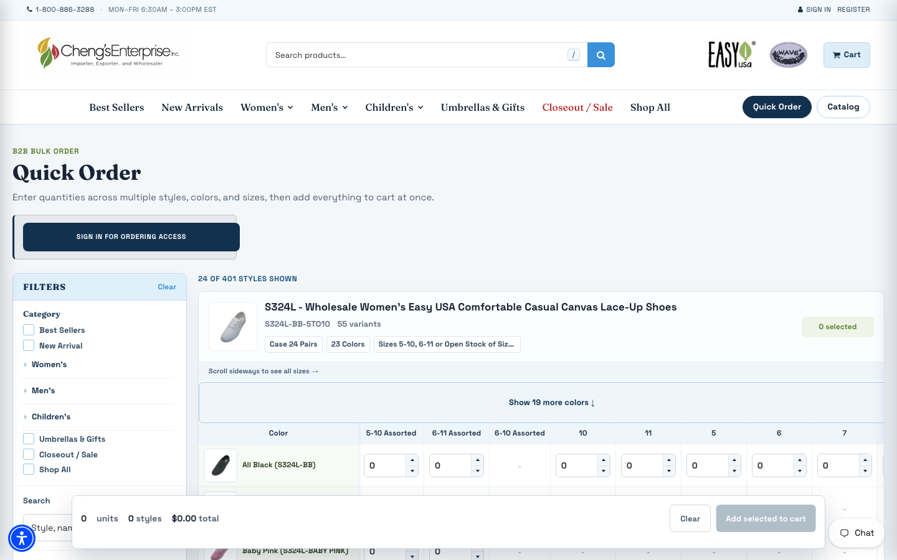

Building a foundation
The Shopify migration was part of a broader effort to update how the business works. The store needed to support wholesale buying, but it also needed reliable product information and account workflows that fit day-to-day operations. Working on those pieces together gave us a more useful starting point for future improvements.
Moving the store to Shopify
A lot of the work was behind the storefront. I consolidated products into color and size variants, preserved existing SKUs, recovered missing information, and corrected collection assignments. The migration included 52,547 customer records.
Building for wholesale orders
Customers needed to understand case quantities and per-pair pricing, choose variants, and use payment and freight options that matched how they did business with us. I worked on navigation, product and collection sections, filters, mobile layouts, accessibility, and a Quick Order page.
Changes after launch
We restored account-required wholesale pricing after reseller feedback. I also worked on access issues for verified customers and adjusted checkout so orders under 150 lb would no longer see a freight-quote option that was causing confusion.
Building with AI
AI was a substantial part of how I approached this work. It helped me take on more of the building directly and work through technical areas I was still learning. My experience with customers and operations helped me work out what the store needed to support.
Groundwork for what comes next
The Shopify storefront launched in August 2026. Work continued through catalog corrections, checkout improvements, and the Quick Order page. Alongside the store, I worked on connecting customer accounts and making product data easier to use. Modernization is still ongoing; these changes give us a foundation for further improvements to ordering, internal tools, and reporting.
Related parts of the work
Wholesale accounts and internal tools →
Working with legacy product data →

